Reflection Tool
Of all the features in Origami Editor 3D, the Reflection Tool is the most important and most powerful one. Reflection Tool can always make a fold regardless of what folding line you draw with the Ruler.
The Reflection Tool operates the following way. When you make a line with the Ruler, the red line splits the screen into two halves. But let's not forget that we are in 3D, so it really splits the space into two half-spaces. Reflection Tool chooses one of these half-spaces, and then it reflects everything in that half-space over the Ruler, to the other side.
What you must always keep in mind is that this is a 3D reflection: a reflection over a plane. This plane is the plane that intersects the screen at a right angle, along the red line.
This concept is not trivial at all, and it takes a lot of time to get used to it. The following exercises should be enough to get you started.
Exercise 1
This exercise will show you how some more advanced origami techniques can be replicated in the program.
- Fold the paper into a book shape following the steps of the Rotation Tool Exercise 1.
- Turn it around in the 3D View so that it looks something like this:
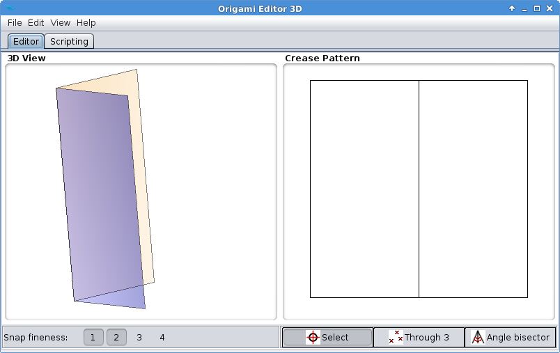
- Set the Ruler as seen below, and select Reflect from the popup menu:
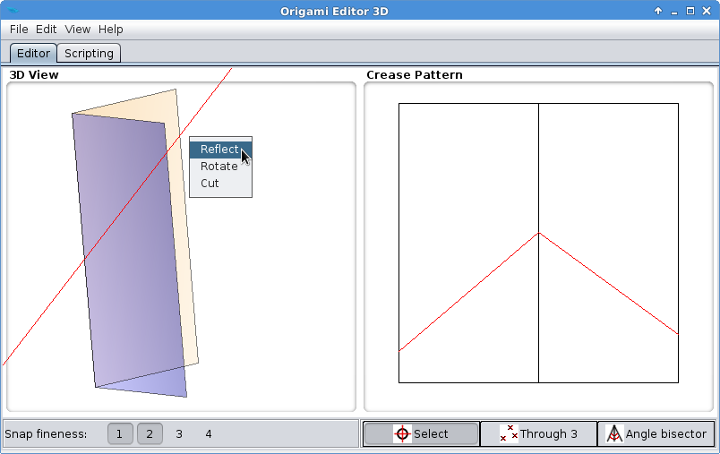
- Now you can see that Reflection Tool has reflected everything on the left side of the Ruler over to the right side. With this, you have made a reverse fold, as origami artists call it. This is how it looks when viewed from the blue side of the paper:
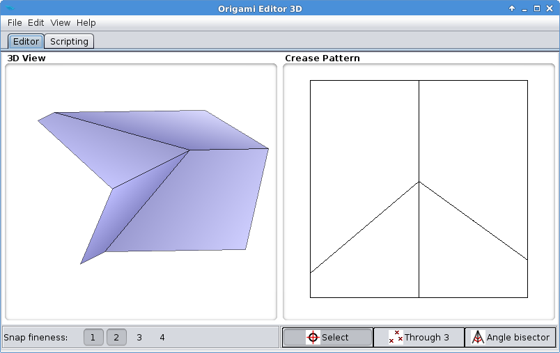
- Now turn it blue side up so that it looks like this:
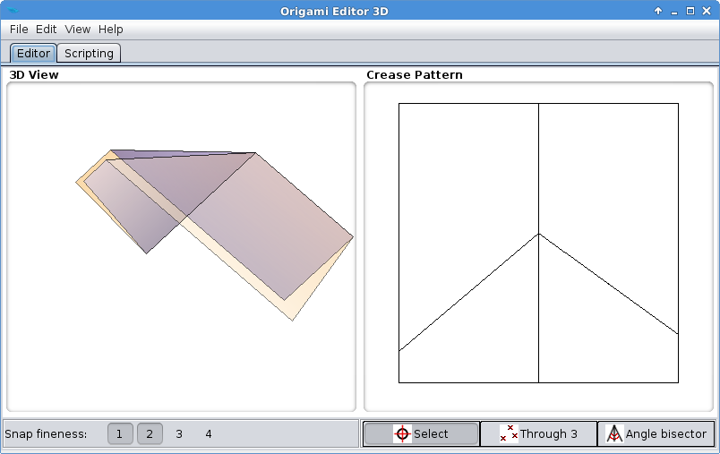
- Place the Ruler near the center of the paper so that it makes an arrowhead shape in the Crease Pattern view:
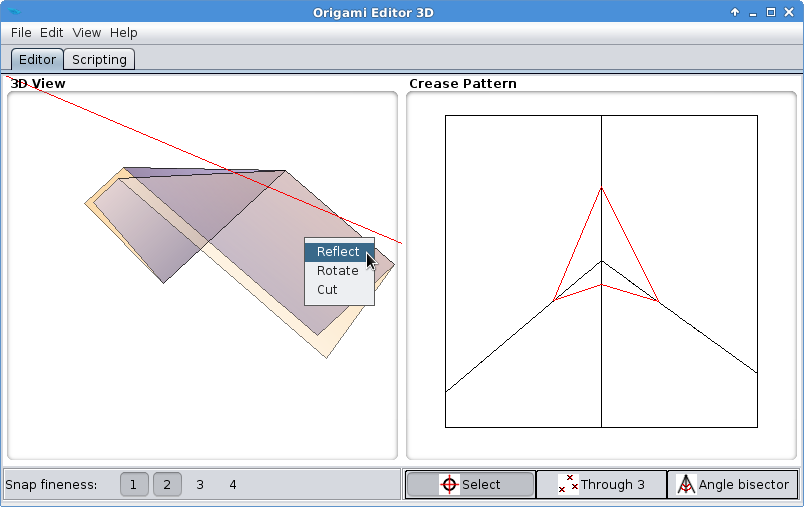
Then click Reflect again.
- You just created a sink fold. Simply put, you made a small dent in the middle of the paper.
 You should experiment with Reflection a lot to understand how it works. For example, repeating Step 6 over and over again results in multiple nested sink folds:
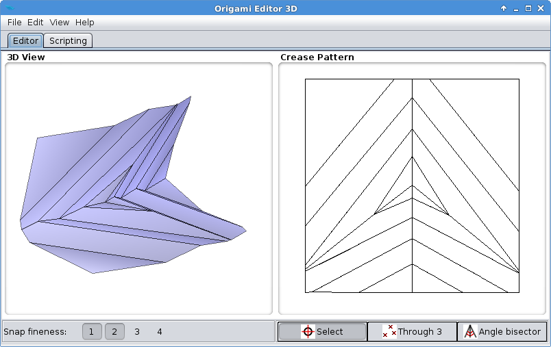
You should experiment with Reflection a lot to understand how it works. For example, repeating Step 6 over and over again results in multiple nested sink folds:
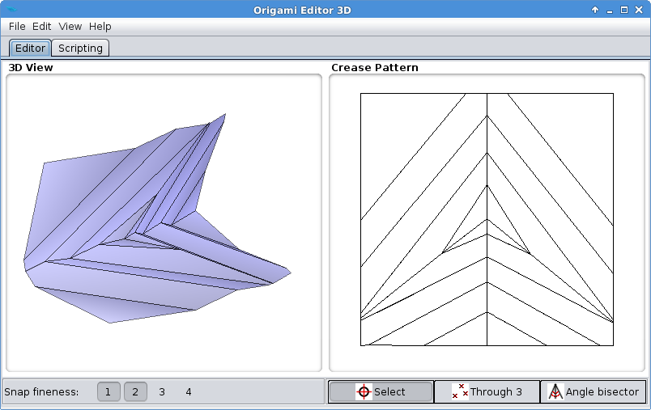
Exercise 2
- Go to File > Example figures > Masu box. If you turn this model around, you can see it's a square box with an open top:
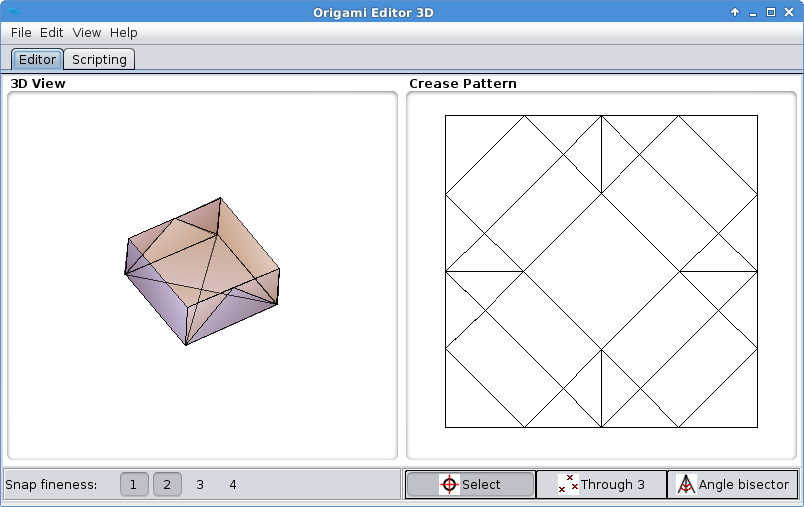
- Left click on the 3D View three times to return to front view:
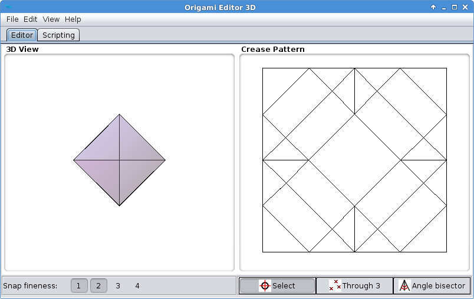
- Put the Ruler halfway to the right corner like in the picture below, and click Reflect:
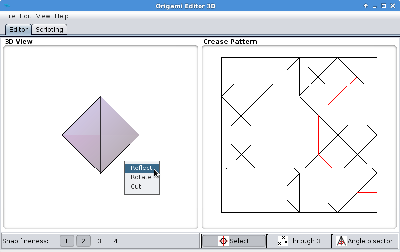
- Now it's clearly apparent that the Reflection Tool has reflected the right corner over the Ruler:
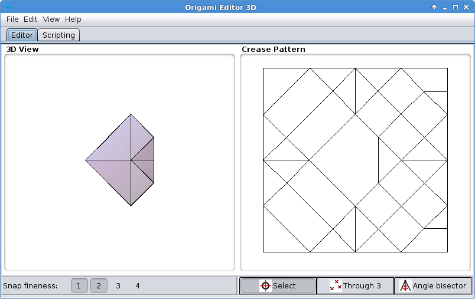
If you change perspective, you will also see that it has become a heart-shaped box:
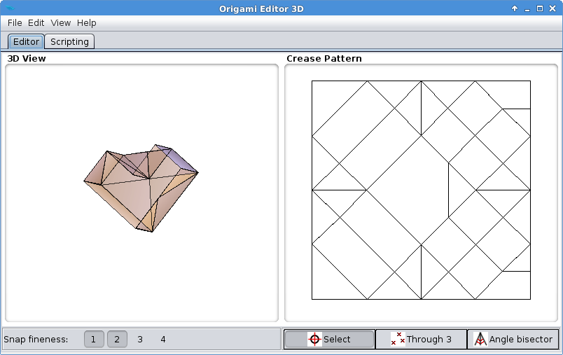
Here is the same box with real paper:
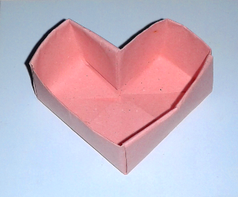